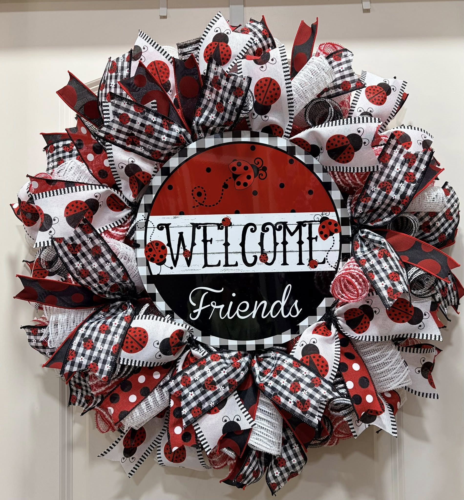

WHO WE ARE
We are Debbie and Ed Kowalsky, the husband and wife duo behind D & E Creations. Debbie hand makes beautiful, detailed custom wreaths in her spare time while Ed hand crafts intricate and durable wooden designs in his retirement. What started as fun hobbies have now transformed into a side businesses for the pair of us.

WHAT WE DO
We create custom wreaths using deco mesh, wired ribbons, and custom signs made of metal or wood. We also create custom designs out of wood such as cutting boards, birdhouses, bird feeders, fireplace match holders, charcuterie boards, and custom boxes. Domestic and international wood species available, custom items and wood species considered.